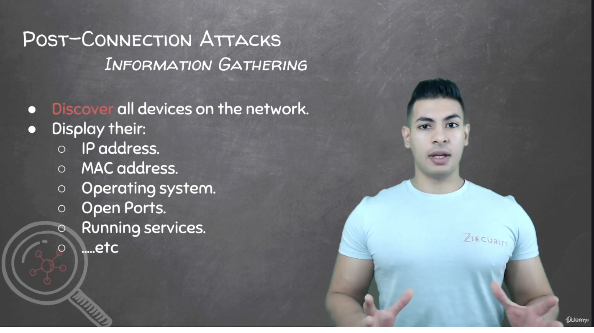

Hacking Skills
My Experience
I learned ethical hacking through online courses like those on Udemy, which gave me insight into cybersecurity threats and defense techniques. This knowledge has helped me protect my own devices and understand the importance of digital security in today’s world.
What I Learned
- Basic cybersecurity principles and terminology
- Common vulnerabilities such as SQL injection, phishing, and malware
- Tools for penetration testing and network scanning
- Best practices for securing systems and data privacy
Where You Can Learn
- Udemy - Ethical hacking courses
- Coursera - Cybersecurity specializations
- Cybrary - Free cybersecurity training
- Offensive Security - Advanced penetration testing
Why It Matters
Understanding hacking skills ethically is essential in protecting digital information and infrastructures. It empowers individuals and organizations to defend against cyber attacks, safeguarding privacy and maintaining trust in technology.